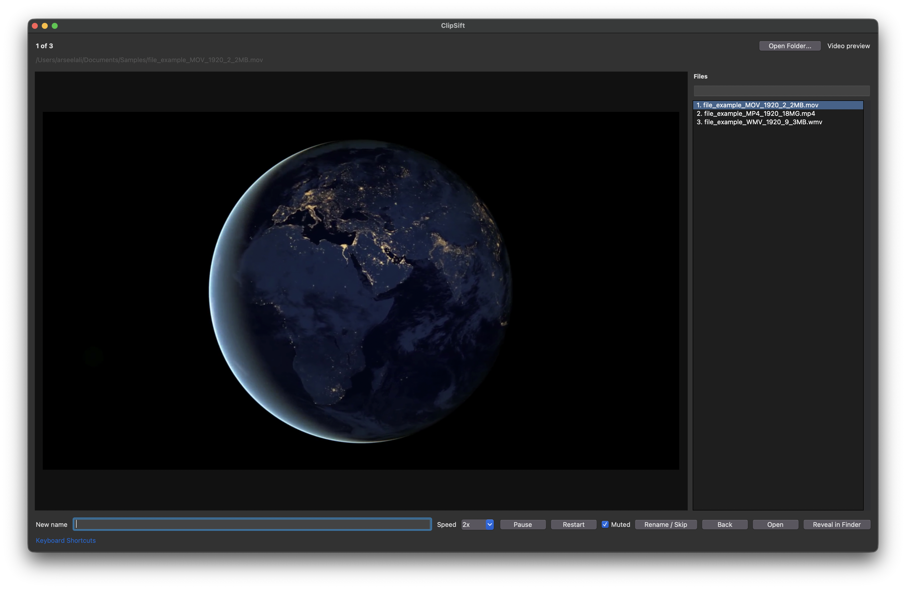
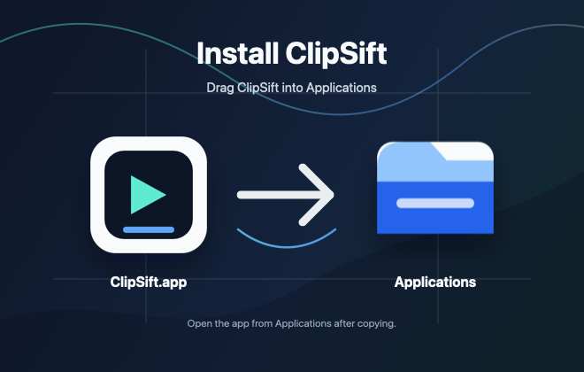

Actual video playback
Preview videos in the app with selectable speed, per-speed frame rate settings, play/pause, fullscreen, and session mute.
Photo & video organizer for macOS
Give your photos and videos names you can find again. Preview each file, rename it, and move on — whether you’re preparing an edit or organizing family memories.
Version 1.0.0 · Drag-to-Applications installer · Release notes

Made for large folders
Preview videos in the app with selectable speed, per-speed frame rate settings, play/pause, fullscreen, and session mute.
Type a new name without the extension, press Enter, and ClipSift preserves the file extension while moving to the next file.
Leave the rename box blank to skip. Use the file list and search box to jump directly to any media item in the folder.
Review media on your Mac without an upload or account workflow. Rename files in place while keeping their original contents.
The loop
Choose a media folder from the app menu or toolbar. Try a copy first: renaming changes the actual filenames.
Photos render normally. Videos play in the preview pane and can be sped up or shown fullscreen.
Type a name without the extension and press Enter. Leave the box blank to skip, or use Command-Z to undo a rename during the session.
Get started

Download the DMG, drag ClipSift into Applications, then launch it and choose Open Folder. No source build is needed to try the app.
Download ClipSift 1.0.0All release details · Build from source
macOS package only. If macOS blocks first launch, review Apple’s guidance for downloaded apps.
Source available
Report a problem, suggest a workflow improvement, or share ClipSift with someone sorting their photos and videos.